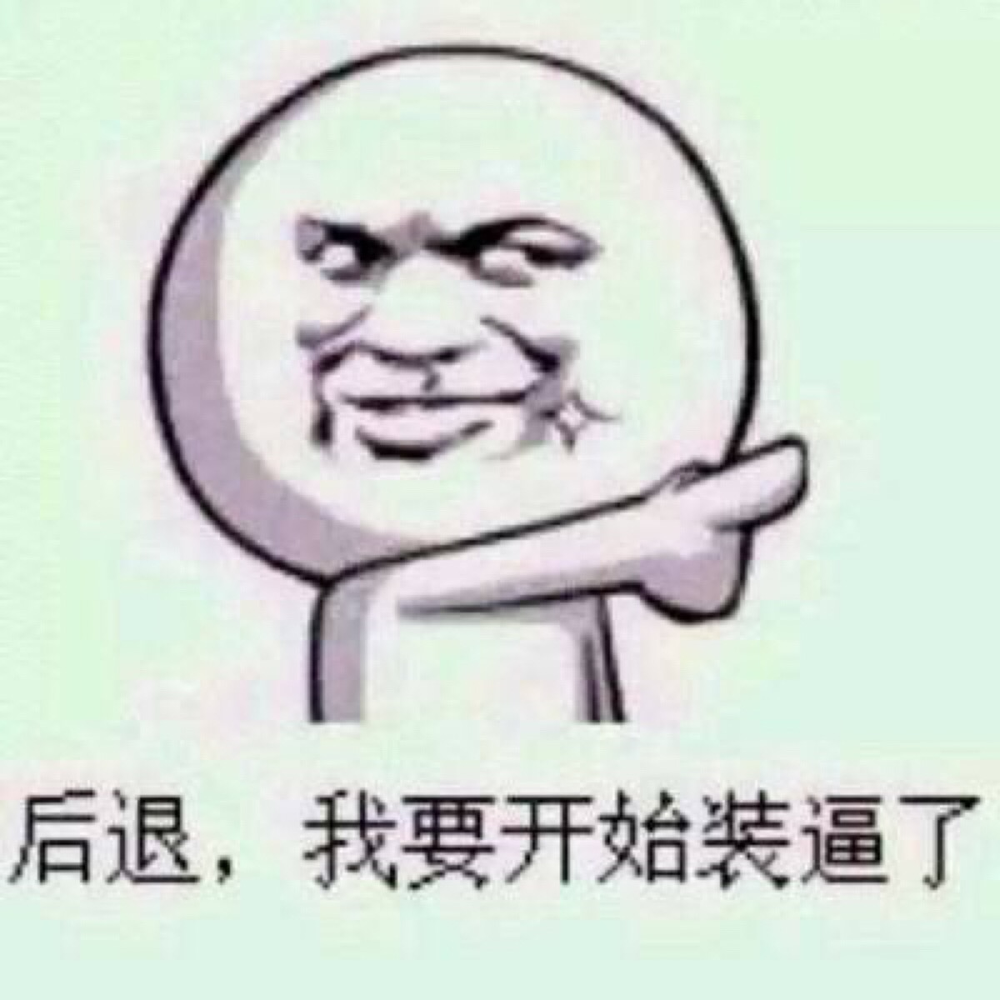
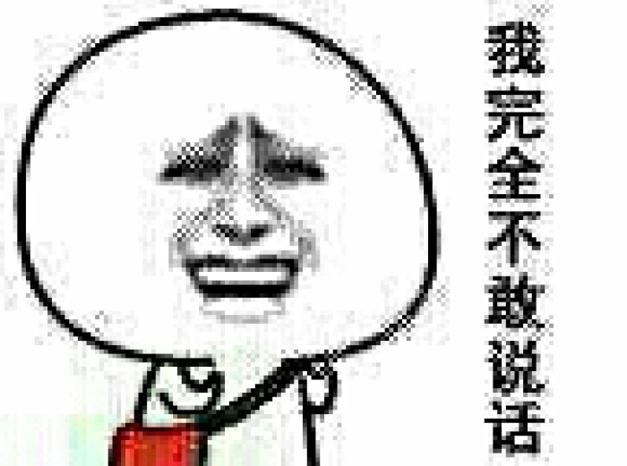
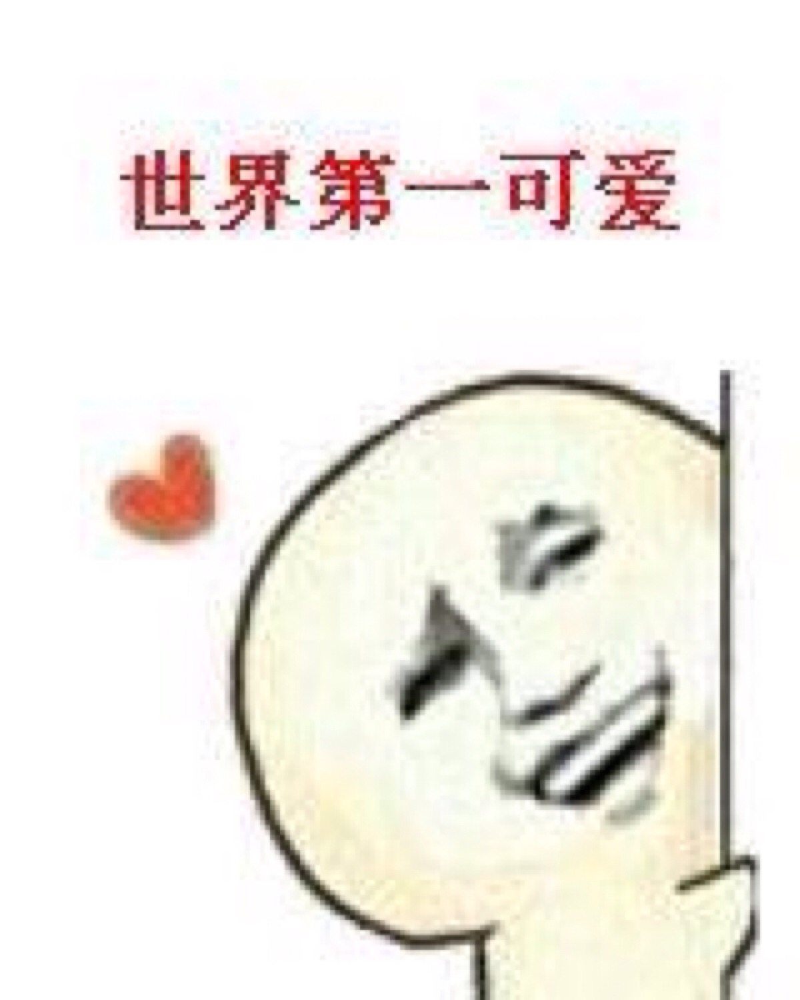
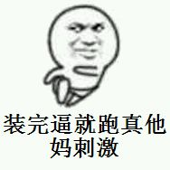

再次假装有个标题
很想买却没钱买的书————解忧杂货店
这是我 2017-7-11 9:55
现代人内心流失的东西，这家杂货店能帮你找回————僻静的街道旁有一家杂货店，只要写下烦恼投进卷帘门的投信口，第二天就会 在店后的牛奶箱里得到回答。因男友身患绝症，年轻女孩静子在爱情与梦想间徘徊；克郎为了音乐梦想离家漂泊，却在现实中寸步 难行；少年浩介面临家庭巨变，挣扎在亲情与未来的迷茫中……他们将困惑写成信投进杂货店，随即奇妙的事情竟不断发生。生命中 的一次偶然交会，将如何演绎出截然不同的人生？
如今回顾写作过程，我发现自己始终在思考一个问题：站在人生的岔路口，人究竟应该怎么做？我希望读者能在掩卷时喃喃自语： 我从未读过这样的小说。———— 东野圭吾

- 假装有内容
- 有内容
- 内容
一波图
如图
如图
如图
如图
溜了溜了
没有文章了
假的标题
这是我 2017-7-11 10：19
- 这就是"ul"和"ol"的区别
- "ul"是无序列表
- "ol"是有序列表
不知道干嘛用的表格
| 头 | 头 | 头 |
| 假装有内容 | 假装有内容 | 别点 |
| 假装有内容 | 假装有内容 | 没东西的 |
| 假装有内容 | 假装有内容 | 信我 |
| 假装有内容 | 假装有内容 | hhhh |
| 假装有内容 | 结束 | |